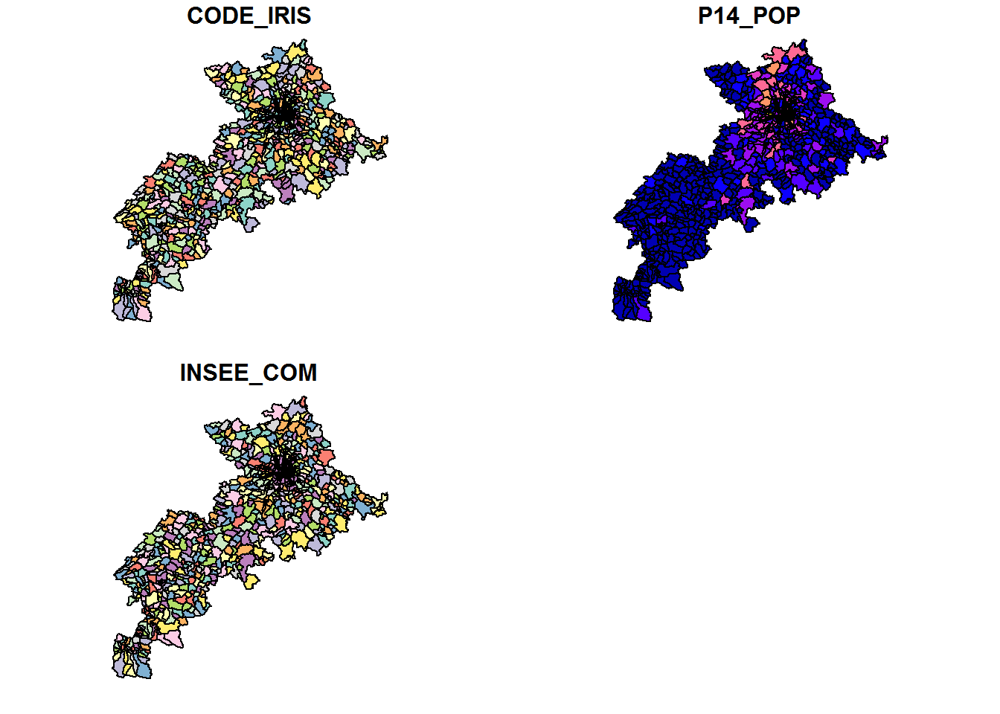
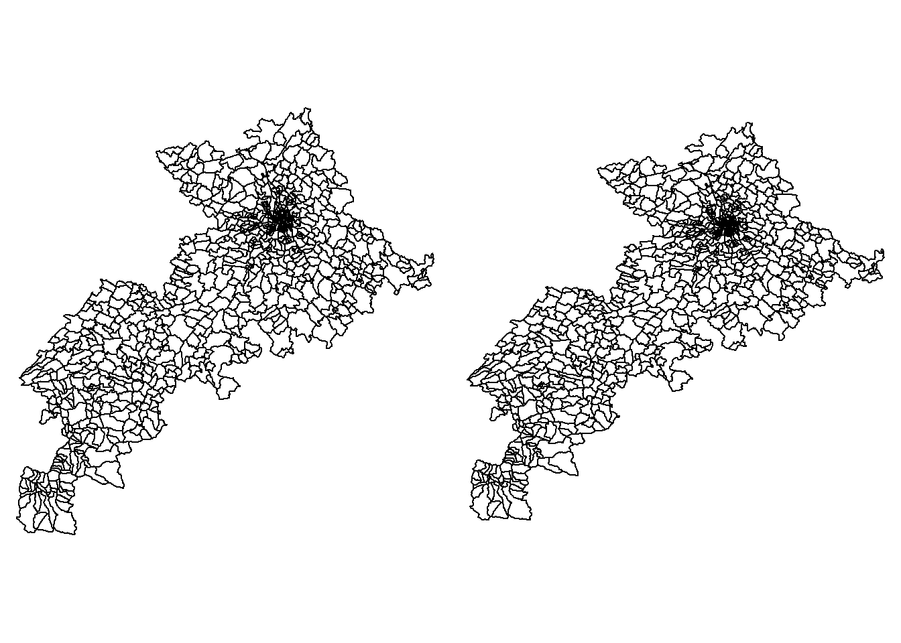
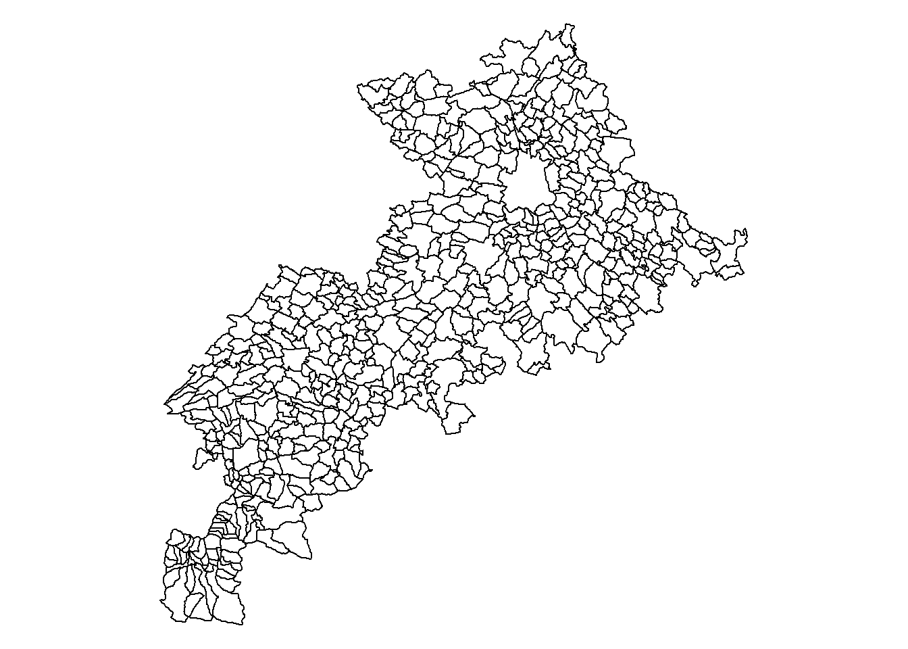
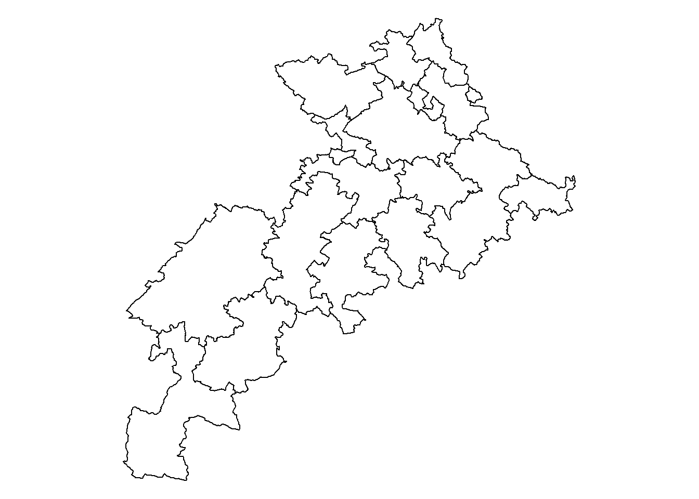
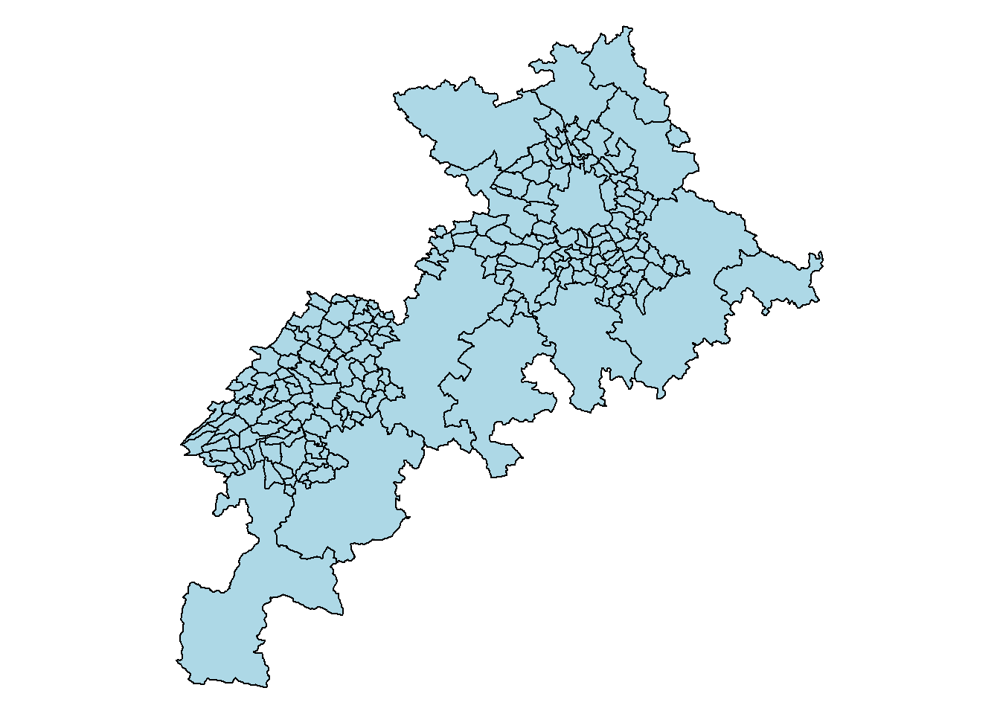
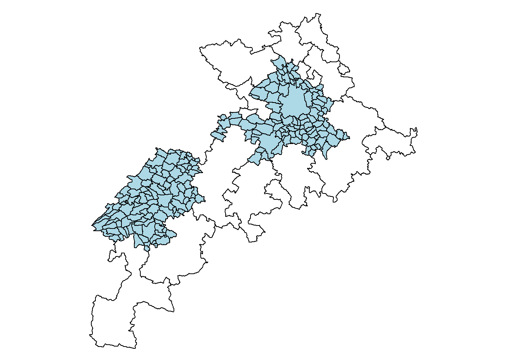
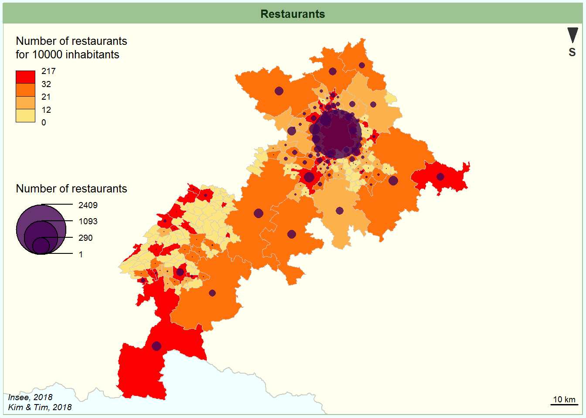
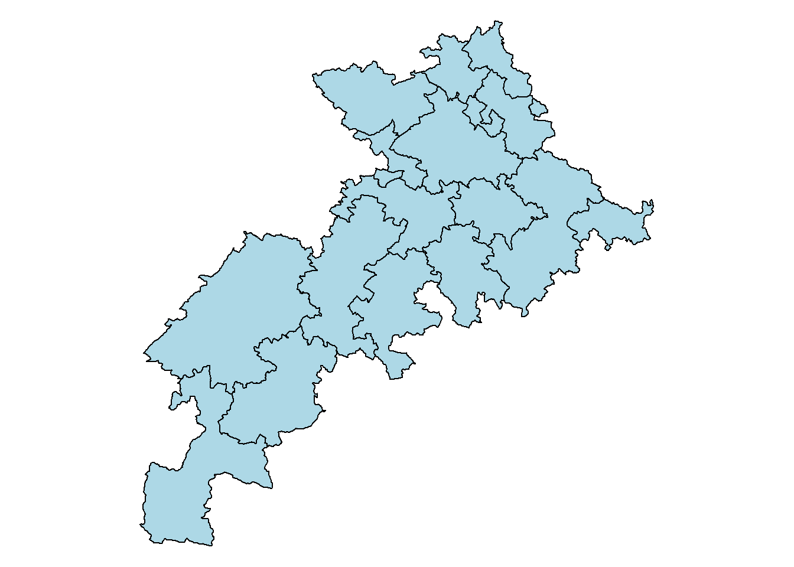
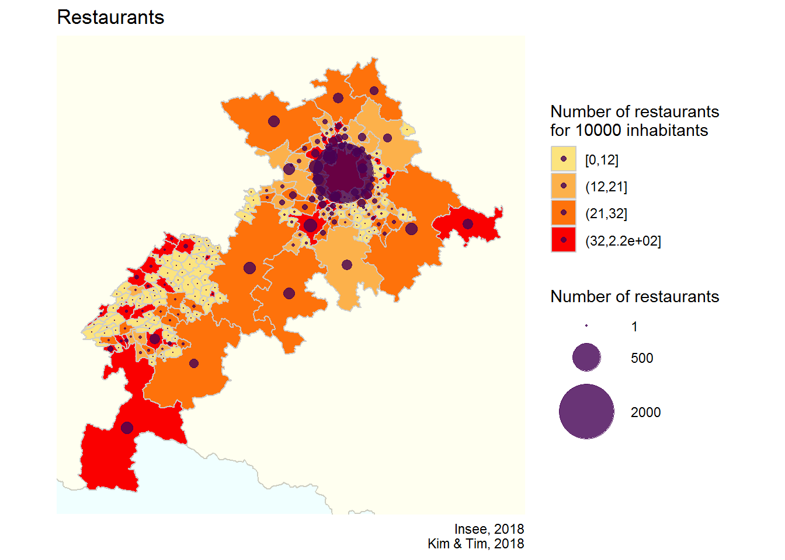
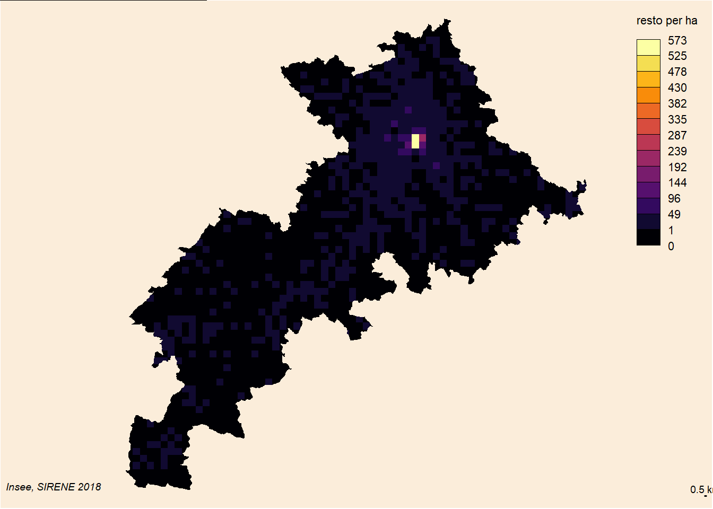

LET’S PRACTICE Geovisualization and Spatial Analysis
Kim Antunez & Timothée Giraud
Massive spatial data: challenges in acquisition, treatment and use for territories
Exercice 1 : Manipuler les objets sf et des data.frames associés
- Charger la couche cartographique des iris du département 31 “iris_31.rds” dans R. Est-ce que la fonction
sf::st_readfonctionnerait également ? Pourquoi ?
CLUES
Utilisez la fonction readRDS.
library(sf)
iris_31 <- readRDS("../data/iris_31.rds")
# iris_31 <- st_read("../data/iris_31.rds")- Afficher simplement le fond de carte du département 31 avec l’instruction
plot(iris_31). Que remarquez-vous ?
plot(iris_31)
# On remarque que R effectue un graphique par variable présent dans le fichier sf, ici 3.- Quel est le rôle de la fonction
sf::st_geometry? Quelle solution proposez-vous alors ?
# ?sf::st_geometry
# Cette fonction permet d'isoler les informations de l'objet sf relatives à sa géométrie et d'ainsi mettre de côté les autres variables ici CODE_IRIS, P14_POP et INSEE_COM
plot(st_geometry(iris_31))- En quelle projection est la couche cartographique ? Cartographiez-la dans une autre projection.
CLUES
Utilisez la fonction sf::st_crs pour deviner la projection et sf::st_transform pour changer la projection. Vous pouvez par exemple tester l’Azimuthal Equidistant projection telle que “crs=”+proj=aeqd +lat_0=90 +lon_0=0" pour voir une nette différence.
#?st_crs
st_crs(iris_31)
par(mar = c(0,0,0,0), mfrow = c(1,2))
plot(st_geometry(iris_31))
plot(st_transform(st_geometry(iris_31), crs="+proj=aeqd +lat_0=90 +lon_0=0"))
- A partir de la couche “iris_31”, créez une couche cartographique appelée “com_31” qui correspond aux communes du département 31. Gardez également dans cette nouvelle couche les informations sur la population présente dans chaque commune.
Information
CLUES
Utilisez les fonctions classiques du package dplyr select, group_by et summarize qui s’appliquent aussi sur des objets de type sf.
library(dplyr)
com_31 <- iris_31 %>%
select(INSEE_COM,P14_POP) %>%
group_by(INSEE_COM) %>%
summarize(P14_POP= sum(P14_POP)) %>%
st_cast("MULTIPOLYGON")
plot(st_geometry(com_31))
- En utilisant les données contenues dans “sir_31”, ajoutez à cette couche le nombre de restaurants par commune.
Information
sir_31 <- readRDS("../data/sir_31.rds")
com_31 <- left_join(com_31,
sir_31 %>%
mutate(INSEE_COM=paste0(DEPET,COMET)) %>%
group_by(INSEE_COM) %>%
summarize(nb_of_rest= n()) %>%
st_set_geometry(NULL),
by=c("INSEE_COM"="INSEE_COM")
) %>%
mutate(nb_of_rest=ifelse(is.na(nb_of_rest),0,nb_of_rest))- Agrégez toutes les informations présentes dans “com_31” au niveau des intercommunalités (EPCI).
Information
table_passage <- readRDS("../data/table_MAUP.rds") %>%
select(CODGEO,EPCI)
epci_31 <- com_31 %>%
left_join(table_passage,by=c("INSEE_COM"="CODGEO")) %>%
group_by(EPCI) %>%
summarize(P14_POP=sum(P14_POP),nb_of_rest= sum(nb_of_rest)) %>%
st_cast("MULTIPOLYGON")
plot(st_geometry(epci_31))
Information
- On souhaite cartographier le nombre de restaurants au niveau communal si son EPCI contient plus de 100 restaurants et au niveau intercommunal si l’EPCI contient moins de 100 restaurants.Créez une couche cartographique qui réponde à ce besoin.
CLUES
Commencez par créer les couches EPCI_less100 et COM_more100 qui correspondent respectivement aux EPCI qui contiennent moins de 100 restaurants et aux communes qui appartiennent à un EPCI contenant plus de 100 restaurants. Puis, utilisez l’instruction do.call(rbind, list(EPCI_less100,COM_more100)) pour les fusionner.
EPCI_less100 <- epci_31 %>% filter(nb_of_rest < 100) %>%
setNames(c("territory","P14_POP","nb_of_rest","geometry"))
COM_more100 <- left_join(com_31,table_passage,by=c("INSEE_COM"="CODGEO")) %>%
filter(!EPCI%in%EPCI_less100$territory) %>%
select(-EPCI) %>%
setNames(c("territory","P14_POP","nb_of_rest","geometry"))
par(mar = c(0,0,0,0), mfrow = c(1,2))
plot(st_geometry(epci_31))
plot(st_geometry(EPCI_less100), col="lightblue",add=TRUE)
plot(st_geometry(epci_31))
plot(st_geometry(COM_more100), col="lightblue",add=TRUE)
mix_31 <- do.call(rbind, list(EPCI_less100,COM_more100))
plot(st_geometry(mix_31), col="lightblue")Municipalities

Intercommunalities

Both

- A l’aide du package {cartography}, ajoutez simplement à cette carte un rond proportionnel au nombre de restaurants sur chacun de ces territoires.
CLUES
C’est la fonction propSymbolsLayer qui permet de dessiner des ronds proportionnels.
library(cartography)
plot(st_geometry(mix_31), col = "ivory1", border = "ivory3",lwd =0.5,bg = "#FBEDDA")
propSymbolsLayer(mix_31, var = "nb_of_rest", inches = 0.2)
Exercice 2 : Cartographie statique et interactive
Remarque pour Timothée
- Préparation des données :
- Chargez dans R le fond cartographique des contours du territoire métropolitain français “fra.shp”
- En utilisant la couche “mix_31” de l’exercice précédent, créez une variable “nb_rest_10000inhab” qui correspond au nombre de restaurants pour 10 000 habitants sur le territoires
- Créez le vecteur “bks” qui correspond aux breaks des quantiles (n=6) sur la variable “nb_rest_10000inhab” en enlevant les doublons de ce vecteur
- Créez le vecteur “cols” qui correspond à un dégradé de orange (n=4)
- Enfin, ajoutez à la couche “mix_31” la variable “typo” qui indique directement la classe de discrétisation à partir des éléments contenus dans “bks” à appliquer à la variable “nb_rest_10000inhab”
Information
getBreaks et carto.pal du package {cartography}. Pour la création de la variable typo, vous pouvez utiliser la fonction cut en appliquant les paramètres digit.lab=2 et include.lowest = TRUE.
fra <- st_read("../data/fra.shp", quiet = TRUE)
mix_31 <- mix_31 %>% mutate(nb_rest_10000inhab = 10000 * nb_of_rest / P14_POP)
bks <- getBreaks(v = mix_31$nb_rest_10000inhab, method = "quantile", nclass = 6)[-c(1:2)]
cols <- carto.pal("orange.pal", 4)
mix_31 <- mix_31 %>% mutate(typo = cut(nb_rest_10000inhab,breaks = bks, dig.lab = 2, include.lowest = TRUE))- A l’aide du package cartography, réalisez cette carte qui contient en applat de couleur la variable “nb_rest_10000inhab” et en rond proportionnel la variable “nb_of_rest”. Réalisez la même chose avec le package ggplot2.
cartography

ggplot2
Avec cartography :
par(mar = c(0.2, 0.2, 1.4, 0.2), bg = "azure")
plot(st_geometry(mix_31), border="azure")
plot(st_geometry(fra), col="ivory", border = "ivory3", xlim = bb[c(1, 3)],
ylim = bb[c(2, 4)],add=TRUE)
choroLayer(mix_31, var = "nb_rest_10000inhab", breaks = bks, col = cols, border = "grey80", lwd = 0.4,
legend.pos = "topleft", legend.title.txt = "Number of restaurants\nfor 10000 inhabitants",
add = TRUE)
propSymbolsLayer(mix_31, var="nb_of_rest", col=viridis::viridis(1,alpha=0.8),border=NA, legend.pos="left", legend.title.txt = "Number of restaurants", add = TRUE)
layoutLayer(title = "Restaurants", sources = "Insee, 2018", author = "Kim & Tim, 2018",
theme = "green.pal", col = "darkred", coltitle = "white", postitle = "center",
frame = TRUE, scale = 10)
north(pos = "topright", south = TRUE)Avec ggplot2 :
library(ggplot2)
map_ggplot <- ggplot() +
geom_sf(data = fra, colour = "ivory3",
fill = "ivory") +
geom_sf(data = mix_31, aes(fill = typo), colour = "grey80") +
scale_fill_manual(name = "Number of restaurants\nfor 10000 inhabitants",
values = cols, na.value = "#303030")+
geom_sf(data = mix_31 %>% st_centroid(),
aes(size= nb_of_rest), color = viridis::viridis(1,alpha=0.8), show.legend = 'point')+
scale_size(name = "Number of restaurants",
breaks = c(1, 500, 2000),
range = c(0,18))+
coord_sf(crs = 2154, datum = NA,
xlim = st_bbox(mix_31)[c(1,3)],
ylim = st_bbox(mix_31)[c(2,4)]
) +
theme_minimal() +
theme(panel.background = element_rect(fill = "azure",color=NA)) +
labs(
title = "Restaurants",
caption = "Insee, 2018\nKim & Tim, 2018"
)
plot(map_ggplot)- Leaflet
Warning
# Ajout des coordonnées X et Y dans mix_31
mix_31 <- bind_cols(mix_31,
mix_31 %>% st_centroid() %>%
st_transform('+proj=longlat +ellps=GRS80 +no_defs') %>%
st_coordinates() %>% as.data.frame())
library(leaflet)
carto <- leaflet(mix_31) %>%
addTiles('http://{s}.tile.openstreetmap.org/{z}/{x}/{y}.png') %>%
addCircles(lng = ~X, lat = ~Y, weight = 1,
radius = ~sqrt(nb_of_rest)*300,
popup = ~paste(nb_of_rest),
color = ~colorQuantile(cols, domain=mix_31$nb_rest_10000inhab, probs= c(0,0.45,0.6,0.8,1.0))(nb_rest_10000inhab)) %>%
addLegend("topleft",
colors = cols,
labels = paste0("[", round(bks,0)[-5], ";", round(bks,0)[-1],"["),
title = "Number of restaurants<br>for 10 000 inhabitants",
opacity = 1)
cartoExercice 3 : Cartogramme
Réaliser un cartogramme du département 31 au niveau intercommunal proportionnellement aux nombres de restaurants (données SIRENE).
library(cartogram)
cartogramme <- cartogram_cont(epci_31, "nb_of_rest", itermax = 5, maxSizeError = 1)
plot(st_geometry(cartogramme), col="lightblue")Normal boundaries

Cartogram

Exercice 4 : Linemap
Réaliser une linemap des communes du département 31 proportionnellement au nombre de restaurants présents dans chaque commune (données SIRENE).
Information
CLUES
Pensez à utiliser les deux fonctions getgrid et linemap de ce package. Les paramètres suivants fonctionnent : cellsize = 1750, k = 400 et threshold = 0.01
library(linemap)
grid <- getgrid(x = com_31, cellsize = 1750, var = "nb_of_rest")
plot(sf::st_geometry(com_31), col="ivory1", border = NA)
opar <- par(mar=c(0,0,0,0), bg = "ivory2")
linemap(x = grid, var = "nb_of_rest", k = 400, threshold = 0.01,
col = "ivory1", border = "ivory4", lwd = 0.6, add = TRUE)
Exercice 5 : Carte tricolore
Réaliser une carte tricolore qui représente les iris de Toulouse en fonction de si elles sont plutôt dotées en restaurants, cafés ou fast foods (données OSM)
Warning
bdd <- readRDS("../data/osm_31.rds") %>%
filter(INSEE_COM=="31555")
bdd_restaurant <- bdd %>% filter(amenity=="restaurant") %>%
group_by(CODE_IRIS) %>%
summarize(restaurant= n()) %>%
st_set_geometry(NULL)
bdd_fast_food <- bdd %>% filter(amenity=="fast_food") %>%
group_by(CODE_IRIS) %>%
summarize(fast_food= n()) %>%
st_set_geometry(NULL)
bdd_cafe <- bdd %>% filter(amenity=="cafe") %>%
group_by(CODE_IRIS) %>%
summarize(cafe= n()) %>%
st_set_geometry(NULL)
couche_carto <- left_join(iris_31 %>% filter(INSEE_COM=="31555"),
bdd_restaurant,
by=c("CODE_IRIS"="CODE_IRIS")
) %>%
left_join(bdd_fast_food,by=c("CODE_IRIS"="CODE_IRIS")) %>%
left_join(bdd_cafe,by=c("CODE_IRIS"="CODE_IRIS")) %>%
replace(is.na(.),0) %>%
mutate(part_restaurant = restaurant / (restaurant + fast_food + cafe),
part_fast_food = fast_food / (restaurant + fast_food + cafe),
part_cafe = cafe / (restaurant + fast_food + cafe)
)
#devtools::install_github("jschoeley/tricolore")
library(tricolore)
# tric <- Tricolore(couche_carto %>% st_set_geometry(NULL), 'part_restaurant', 'part_fast_food', 'part_cafe', center = NA)
#saveRDS(object = tric, file = "../data/tric.rds")
tric <- readRDS("../data/tric.rds")
#tric$legend
couche_carto <- bind_cols(couche_carto,tric$hexsrgb %>% as_data_frame() %>% replace(is.na(.),"#FFFFFFFF"))
library(ggplot2)
q <- ggplot(couche_carto) +
geom_sf(aes(fill = value)) +
scale_fill_identity()
q
reproducibility
sessionInfo()R version 3.3.2 (2016-10-31)
Platform: x86_64-w64-mingw32/x64 (64-bit)
Running under: Windows 7 x64 (build 7601) Service Pack 1
locale:
[1] LC_COLLATE=French_France.1252 LC_CTYPE=French_France.1252
[3] LC_MONETARY=French_France.1252 LC_NUMERIC=C
[5] LC_TIME=French_France.1252
attached base packages:
[1] stats graphics grDevices utils datasets methods base
other attached packages:
[1] tricolore_1.0.3 linemap_0.1.0 cartogram_0.1.0 leaflet_1.1.0
[5] cartography_2.1.1 bindrcpp_0.2 sf_0.6-3 knitr_1.20
[9] stringr_1.3.1 dplyr_0.7.4 purrr_0.2.4 readr_1.1.1
[13] tidyr_0.7.2 tibble_1.4.2 ggplot2_3.0.0 tidyverse_1.1.1
loaded via a namespace (and not attached):
[1] viridis_0.4.0 httr_1.3.1 jsonlite_1.5 viridisLite_0.3.0
[5] modelr_0.1.1 shiny_1.0.5 assertthat_0.2.0 sp_1.2-5
[9] tensorA_0.36.1 cellranger_1.1.0 yaml_2.1.18 robustbase_0.92-8
[13] pillar_1.1.0 backports_1.1.1 lattice_0.20-34 glue_1.2.0
[17] digest_0.6.15 rvest_0.3.2 colorspace_1.3-2 htmltools_0.3.6
[21] httpuv_1.3.5 plyr_1.8.4 psych_1.7.5 pkgconfig_2.0.1
[25] ggtern_2.2.1 broom_0.4.2 haven_1.1.1 xtable_1.8-2
[29] scales_0.5.0.9000 withr_2.1.2 lazyeval_0.2.1 mnormt_1.5-5
[33] proto_1.0.0 magrittr_1.5 readxl_1.1.0.9000 mime_0.5
[37] evaluate_0.10.1 nlme_3.1-128 MASS_7.3-45 forcats_0.2.0
[41] xml2_1.1.1 foreign_0.8-67 compositions_1.40-1 class_7.3-14
[45] tools_3.3.2 hms_0.4.0 energy_1.7-2 munsell_0.4.3
[49] e1071_1.6-8 rlang_0.2.1 classInt_0.1-24 units_0.6-0
[53] grid_3.3.2 unilur_0.3.0.9000 htmlwidgets_1.2 crosstalk_1.0.0
[57] rmarkdown_1.8 boot_1.3-18 gtable_0.2.0 DBI_1.0.0
[61] reshape2_1.4.3 R6_2.2.2 bayesm_3.1-0.1 gridExtra_2.3
[65] lubridate_1.7.1 rgeos_0.3-24 bindr_0.1 rprojroot_1.2
[69] latex2exp_0.4.0 stringi_1.1.7 parallel_3.3.2 Rcpp_0.12.16
[73] DEoptimR_1.0-8